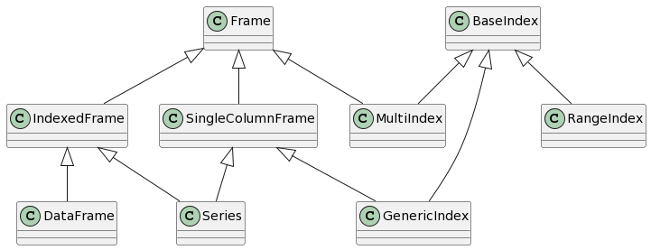

Library Design#
At a high level, cuDF is structured in three layers, each of which serves a distinct purpose:
The Frame layer: The user-facing implementation of pandas-like data structures like
DataFrameandSeries.The Column layer: The core internal data structures used to bridge the gap to our lower-level implementations.
The Cython layer: The wrappers around the fast C++
libcudflibrary.
In this document we will review each of these layers, their roles, and the requisite tradeoffs. Finally we tie these pieces together to provide a more holistic view of the project.
The Frame layer#
This class diagram shows the relationship between the principal components of the Frame layer:
All classes in the Frame layer inherit from one or both of the two base classes in this layer: Frame and BaseIndex.
The eponymous Frame class is, at its core, a simple tabular data structure composed of columnar data.
Some types of Frame contain indexes; in particular, any DataFrame or Series has an index.
However, as a general container of columnar data, Frame is also the parent class for most types of index.
BaseIndex, meanwhile, is essentially an abstract base class encoding the pandas.Index API.
Various subclasses of BaseIndex implement this API in specific ways depending on their underlying data.
For example, RangeIndex avoids actually materializing a column, while a MultiIndex contains multiple columns.
Most other index classes consist of a single column of a given type, e.g. strings or datetimes.
As a result, using a single abstract parent provides the flexibility we need to support these different types.
With those preliminaries out of the way, let’s dive in a little bit deeper.
Frames#
Frame exposes numerous methods common to all pandas data structures.
Any methods that have the same API across Series, DataFrame, and Index should be defined here.
Additionally any (internal) methods that could be used to share code between those classes may also be defined here.
The primary internal subclass of Frame is IndexedFrame, a Frame with an index.
An IndexedFrame represents the first type of object mentioned above: indexed tables.
In particular, IndexedFrame is a parent class for DataFrame and Series.
Any pandas methods that are defined for those two classes should be defined here.
The second internal subclass of Frame is SingleColumnFrame.
As you may surmise, it is a Frame with a single column of data.
This class is a parent for most types of indexes as well as Series (note the diamond inheritance pattern here).
While IndexedFrame provides a large amount of functionality, this class is much simpler.
It adds some simple APIs provided by all 1D pandas objects, and it flattens outputs where needed.
Indexes#
While we’ve highlighted some exceptional cases of Indexes before, let’s start with the base cases here first.
BaseIndex is intended to be a pure abstract class, i.e. all of its methods should simply raise NotImplementedError.
In practice, BaseIndex does have concrete implementations of a small set of methods.
However, currently many of these implementations are not applicable to all subclasses and will be eventually be removed.
Almost all indexes are subclasses of GenericIndex, a single-columned index with the class hierarchy:
class GenericIndex(SingleColumnFrame, BaseIndex)
Integer, float, or string indexes are all composed of a single column of data.
Most GenericIndex methods are inherited from Frame, saving us the trouble of rewriting them.
We now consider the three main exceptions to this model:
A
RangeIndexis not backed by a column of data, so it inherits directly fromBaseIndexalone. Wherever possible, its methods have special implementations designed to avoid materializing columns. Where such an implementation is infeasible, we fall back to converting it to anInt64Indexfirst instead.A
MultiIndexis backed by multiple columns of data. Therefore, its inheritance hierarchy looks likeclass MultiIndex(Frame, BaseIndex). Some of its moreFrame-like methods may be inherited, but many others must be reimplemented since in many cases aMultiIndexis not expected to behave like aFrame.Just like in pandas,
Indexitself can never be instantiated.pandas.Indexis the parent class for indexes, but its constructor returns an appropriate subclass depending on the input data type and shape. Unfortunately, mimicking this behavior requires overriding__new__, which in turn makes shared initialization across inheritance trees much more cumbersome to manage. To enable sharing constructor logic across different index classes, we instead defineBaseIndexas the parent class of all indexes.Indexinherits fromBaseIndex, but it masquerades as aBaseIndexto match pandas. This class should contain no implementations since it is simply a factory for other indexes.
The Column layer#
The next layer in the cuDF stack is the Column layer.
This layer forms the glue between pandas-like APIs and our underlying data layouts.
The principal objects in the Column layer are the ColumnAccessor and the various Column classes.
The Column is cuDF’s core data structure that represents a single column of data of a specific data type.
A ColumnAccessor is a dictionary-like interface to a sequence of Columns.
A Frame owns a ColumnAccessor.
ColumnAccessor#
The primary purpose of the ColumnAccessor is to encapsulate pandas column selection semantics.
Columns may be selected or inserted by index or by label, and label-based selections are as flexible as pandas is.
For instance, Columns may be selected hierarchically (using tuples) or via wildcards.
ColumnAccessors also support the MultiIndex columns that can result from operations like groupbys.
Columns#
Under the hood, cuDF is built around the Apache Arrow Format.
This data format is both conducive to high-performance algorithms and suitable for data interchange between libraries.
The Column class encapsulates our implementation of this data format.
A Column is composed of the following:
A data type, specifying the type of each element.
A data buffer that may store the data for the column elements. Some column types do not have a data buffer, instead storing data in the children columns.
A mask buffer whose bits represent the validity (null or not null) of each element. Nullability is a core concept in the Arrow data model. Columns whose elements are all valid may not have a mask buffer. Mask buffers are padded to 64 bytes.
Its children, a tuple of columns used to represent complex types such as structs or lists.
A size indicating the number of elements in the column.
An integer offset use to represent the first element of column that is the “slice” of another column. The size of the column then gives the extent of the slice rather than the size of the underlying buffer. A column that is not a slice has an offset of 0.
More information about these fields can be found in the documentation of the
Apache Arrow Columnar Format,
which is what the cuDF Column is based on.
The Column class is implemented in Cython to facilitate interoperability with libcudf’s C++ data structures.
Most higher-level functionality is implemented in the ColumnBase subclass.
These functions rely Column APIs to call libcudf APIs and translate their results to Python.
This separation allows ColumnBase to be implemented in pure Python, which simplifies development and debugging.
ColumnBase provides some standard methods, while other methods only make sense for data of a specific type.
As a result, we have various subclasses of ColumnBase like NumericalColumn, StringColumn, and DatetimeColumn.
Most dtype-specific decisions should be handled at the level of a specific Column subclass.
Each type of Column only implements methods supported by that data type.
Different types of ColumnBase are also stored differently in memory according to the Arrow format.
As one example, a NumericalColumn with 1000 int32 elements and containing nulls is composed of:
A data buffer of size 4000 bytes (sizeof(int32) * 1000)
A mask buffer of size 128 bytes (1000/8 padded to a multiple of 64 bytes)
No children columns
As another example, a StringColumn backing the Series ['do', 'you', 'have', 'any', 'cheese?'] is composed of:
No data buffer
No mask buffer as there are no nulls in the Series
Two children columns:
A column of UTF-8 characters
['d', 'o', 'y', 'o', 'u', 'h', ..., '?']A column of “offsets” to the characters column (in this case,
[0, 2, 5, 9, 12, 19])
Data types#
cuDF uses dtypes to represent different types of data.
Since efficient GPU algorithms require preexisting knowledge of data layouts,
cuDF does not support the arbitrary object dtype, but instead defines a few custom types for common use-cases:
ListDtype: Lists where each element in every list in a Column is of the same typeStructDtype: Dicts where a given key always maps to values of the same typeCategoricalDtype: Analogous to the pandas categorical dtype except that the categories are stored in device memoryDecimalDtype: Fixed-point numbersIntervalDtype: Intervals
Note that there is a many-to-one mapping between data types and Column classes.
For instance, all numerical types (floats and ints of different widths) are all managed using NumericalColumn.
Buffer#
Columns are in turn composed of one or more Buffers.
A Buffer represents a single, contiguous, device memory allocation owned by another object.
A Buffer constructed from a preexisting device memory allocation (such as a CuPy array) will view that memory.
Conversely, when constructed from a host object,
Buffer uses rmm.DeviceBuffer to allocate new memory.
The data is then copied from the host object into the newly allocated device memory.
You can read more about device memory allocation with RMM here.
Spilling to host memory#
Setting the environment variable CUDF_SPILL=on enables automatic spilling (and “unspilling”) of buffers from
device to host to enable out-of-memory computation, i.e., computing on objects that occupy more memory than is
available on the GPU.
Spilling can be enabled in two ways (it is disabled by default):
setting the environment variable
CUDF_SPILL=on, orsetting the
spilloption incudfby doingcudf.set_option("spill", True).
Additionally, parameters are:
CUDF_SPILL_ON_DEMAND=ON/cudf.set_option("spill_on_demand", True), which registers an RMM out-of-memory error handler that spills buffers in order to free up memory. If spilling is enabled, spill on demand is enabled by default.CUDF_SPILL_DEVICE_LIMIT=<X>/cudf.set_option("spill_device_limit", <X>), which sets a device memory limit of<X>in bytes. This introduces a modest overhead and is disabled by default. Furthermore, this is a soft limit. The memory usage might exceed the limit if too many buffers are unspillable.
Design#
Spilling consists of two components:
A new buffer sub-class,
SpillableBuffer, that implements moving of its data from host to device memory in-place.A spill manager that tracks all instances of
SpillableBufferand spills them on demand. A global spill manager is used throughout cudf when spilling is enabled, which makesas_buffer()returnSpillableBufferinstead of the defaultBufferinstances.
Accessing Buffer.get_ptr(...), we get the device memory pointer of the buffer. This is unproblematic in the case of Buffer but what happens when accessing SpillableBuffer.get_ptr(...), which might have spilled its device memory. In this case, SpillableBuffer needs to unspill the memory before returning its device memory pointer. Furthermore, while this device memory pointer is being used (or could be used), SpillableBuffer cannot spill its memory back to host memory because doing so would invalidate the device pointer.
To address this, we mark the SpillableBuffer as unspillable, we say that the buffer has been exposed. This can either be permanent if the device pointer is exposed to external projects or temporary while libcudf accesses the device memory.
The SpillableBuffer.get_ptr(...) returns the device pointer of the buffer memory but if called within an acquire_spill_lock decorator/context, the buffer is only marked unspillable while running within the decorator/context.
Statistics#
cuDF supports spilling statistics, which can be very useful for performance profiling and to identify code that renders buffers unspillable.
Three levels of information gathering exist:
disabled (no overhead).
gather statistics of duration and number of bytes spilled (very low overhead).
gather statistics of each time a spillable buffer is exposed permanently (potential high overhead).
Statistics can be enabled in two ways (it is disabled by default):
setting the environment variable
CUDF_SPILL_STATS=<statistics-level>, orsetting the
spill_statsoption incudfby doingcudf.set_option("spill_stats", <statistics-level>).
It is possible to access the statistics through the spill manager like:
>>> import cudf
>>> from cudf.core.buffer.spill_manager import get_global_manager
>>> stats = get_global_manager().statistics
>>> print(stats)
Spill Statistics (level=1):
Spilling (level >= 1):
gpu => cpu: 24B in 0.0033
To have each worker in dask print spill statistics, do something like:
def spill_info():
from cudf.core.buffer.spill_manager import get_global_manager
print(get_global_manager().statistics)
client.submit(spill_info)
The Cython layer#
The lowest level of cuDF is its interaction with libcudf via Cython.
The Cython layer is composed of two components: C++ bindings and Cython wrappers.
The first component consists of .pxd files,
Cython declaration files that expose the contents of C++ header files to other Cython files.
The second component consists of Cython wrappers for this functionality.
These wrappers are necessary to expose this functionality to pure Python code.
They also handle translating cuDF objects into their libcudf equivalents and invoking libcudf functions.
Working with this layer of cuDF requires some familiarity with libcudf’s APIs.
libcudf is built around two principal objects whose names are largely self-explanatory: column and table.
libcudf also defines corresponding non-owning “view” types column_view and table_view.
libcudf APIs typically accept views and return owning types.
Most cuDF Cython wrappers involve converting cudf.Column objects into column_view or table_view objects,
calling a libcudf API with these arguments, then constructing new cudf.Columns from the result.
By the time code reaches this layer, all questions of pandas compatibility should already have been addressed.
These functions should be as close to trivial wrappers around libcudf APIs as possible.
Putting It All Together#
To this point, our discussion has assumed that all cuDF functions follow a strictly linear descent through these layers.
However, it should be clear that in many cases this approach is not appropriate.
Many common Frame operations do not operate on individual columns but on the Frame as a whole.
Therefore, we in fact have two distinct common patterns for implementations in cuDF.
The first pattern is for operations that act on columns of a
Frameindividually. This group includes tasks like reductions and scans (sum/cumsum). These operations are typically implemented by looping over the columns stored in aFrame’sColumnAccessor.The second pattern is for operations that involve acting on multiple columns at once. This group includes many core operations like grouping or merging. These operations bypass the Column layer altogether, instead going straight from Frame to Cython.
The pandas API also includes a number of helper objects, such as GroupBy, Rolling, and Resampler.
cuDF implements corresponding objects with the same APIs.
Internally, these objects typically interact with cuDF objects at the Frame layer via composition.
However, for performance reasons they frequently access internal attributes and methods of Frame and its subclasses.
Copy-on-write#
This section describes the internal implementation details of the copy-on-write feature. It is recommended that developers familiarize themselves with the user-facing documentation of this functionality before reading through the internals below.
The core copy-on-write implementation relies on the CopyOnWriteBuffer class.
When the cudf option "copy_on_write" is True, as_buffer will always return a CopyOnWriteBuffer.
This subclass of cudf.Buffer contains all the mechanisms to enable copy-on-write behavior.
The class stores weak references to every existing CopyOnWriteBuffer in CopyOnWriteBuffer._instances, a mapping from ptr keys to WeakSets containing references to CopyOnWriteBuffer objects.
This means that all CopyOnWriteBuffers that point to the same device memory are contained in the same WeakSet (corresponding to the same ptr key) in CopyOnWriteBuffer._instances.
This data structure is then used to determine whether or not to make a copy when a write operation is performed on a Column (see below).
If multiple buffers point to the same underlying memory, then a copy must be made whenever a modification is attempted.
Eager copies when exposing to third-party libraries#
If a Column/CopyOnWriteBuffer is exposed to a third-party library via __cuda_array_interface__, we are no longer able to track whether or not modification of the buffer has occurred. Hence whenever
someone accesses data through the __cuda_array_interface__, we eagerly trigger the copy by calling
_unlink_shared_buffers which ensures a true copy of underlying device data is made and
unlinks the buffer from any shared “weak” references. Any future copy requests must also trigger a true physical copy (since we cannot track the lifetime of the third-party object). To handle this we also mark the Column/CopyOnWriteBuffer as
obj._zero_copied=True thus indicating that any future shallow-copy requests will trigger a true physical copy
rather than a copy-on-write shallow copy with weak references.
Obtaining a read-only object#
A read-only object can be quite useful for operations that will not
mutate the data. This can be achieved by calling ._get_cuda_array_interface(readonly=True), and creating a SimpleNameSpace object around it.
This will not trigger a deep copy even if the CopyOnWriteBuffer
has weak references. This API should only be used when the lifetime of the proxy object is restricted to cudf’s internal code execution. Handing this out to external libraries or user-facing APIs will lead to untracked references and undefined copy-on-write behavior. We currently use this API for device to host
copies like in ColumnBase.data_array_view(mode="read") which is used for Column.values_host.
Internal access to raw data pointers#
Since it is unsafe to access the raw pointer associated with a buffer when
copy-on-write is enabled, in addition to the readonly proxy object described above,
access to the pointer is gated through Buffer.get_ptr. This method accepts a mode
argument through which the caller indicates how they will access the data associated
with the buffer. If only read-only access is required (mode="read"), this indicates
that the caller has no intention of modifying the buffer through this pointer.
In this case, any shallow copies are not unlinked. In contrast, if modification is
required one may pass mode="write", provoking unlinking of any shallow copies.
Variable width data types#
Weak references are implemented only for fixed-width data types as these are only column
types that can be mutated in place.
Requests for deep copies of variable width data types always return shallow copies of the Columns, because these
types don’t support real in-place mutation of the data.
Internally, we mimic in-place mutations using _mimic_inplace, but the resulting data is always a deep copy of the underlying data.
Examples#
When copy-on-write is enabled, taking a shallow copy of a Series or a DataFrame does not
eagerly create a copy of the data. Instead, it produces a view that will be lazily
copied when a write operation is performed on any of its copies.
Let’s create a series:
>>> import cudf
>>> cudf.set_option("copy_on_write", True)
>>> s1 = cudf.Series([1, 2, 3, 4])
Make a copy of s1:
>>> s2 = s1.copy(deep=False)
Make another copy, but of s2:
>>> s3 = s2.copy(deep=False)
Viewing the data and memory addresses show that they all point to the same device memory:
>>> s1
0 1
1 2
2 3
3 4
dtype: int64
>>> s2
0 1
1 2
2 3
3 4
dtype: int64
>>> s3
0 1
1 2
2 3
3 4
dtype: int64
>>> s1.data._ptr
139796315897856
>>> s2.data._ptr
139796315897856
>>> s3.data._ptr
139796315897856
Now, when we perform a write operation on one of them, say on s2, a new copy is created
for s2 on device and then modified:
>>> s2[0:2] = 10
>>> s2
0 10
1 10
2 3
3 4
dtype: int64
>>> s1
0 1
1 2
2 3
3 4
dtype: int64
>>> s3
0 1
1 2
2 3
3 4
dtype: int64
If we inspect the memory address of the data, s1 and s3 still share the same address but s2 has a new one:
>>> s1.data._ptr
139796315897856
>>> s3.data._ptr
139796315897856
>>> s2.data._ptr
139796315899392
Now, performing write operation on s1 will trigger a new copy on device memory as there
is a weak reference being shared in s3:
>>> s1[0:2] = 11
>>> s1
0 11
1 11
2 3
3 4
dtype: int64
>>> s2
0 10
1 10
2 3
3 4
dtype: int64
>>> s3
0 1
1 2
2 3
3 4
dtype: int64
If we inspect the memory address of the data, the addresses of s2 and s3 remain unchanged, but s1’s memory address has changed because of a copy operation performed during the writing:
>>> s2.data._ptr
139796315899392
>>> s3.data._ptr
139796315897856
>>> s1.data._ptr
139796315879723
cuDF’s copy-on-write implementation is motivated by the pandas proposals documented here: